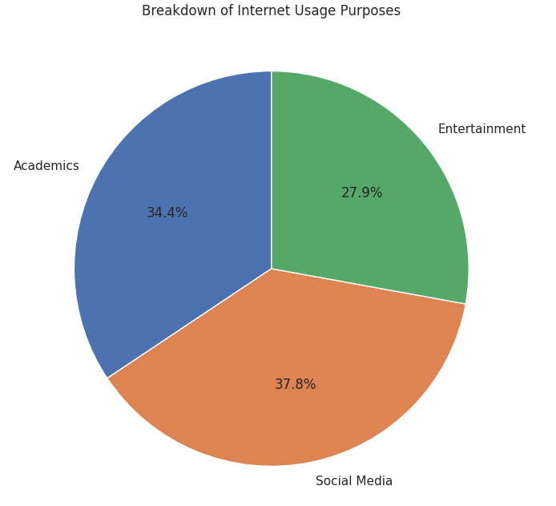
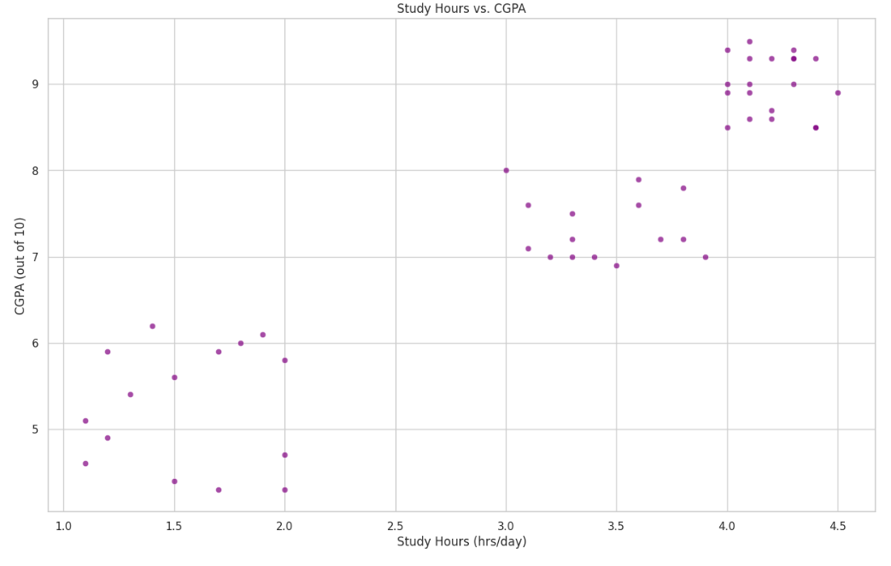
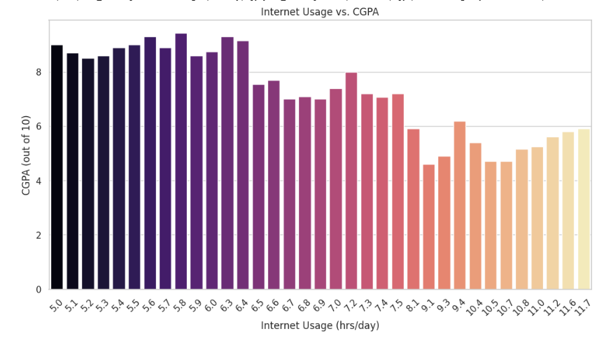
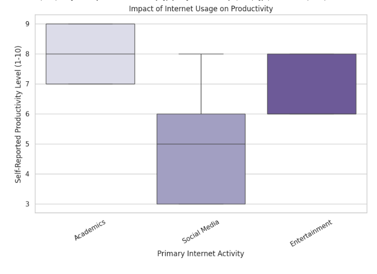
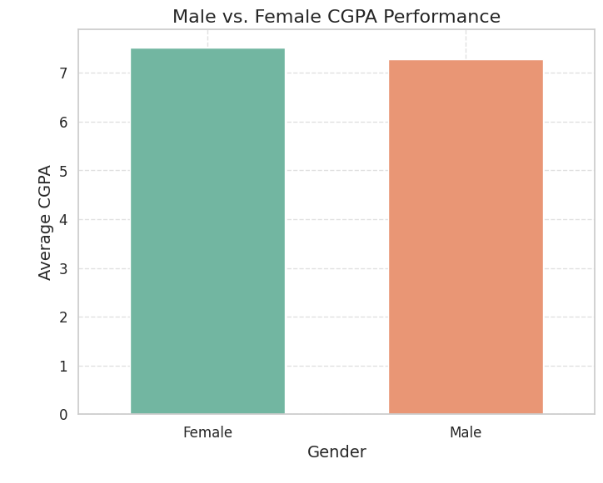
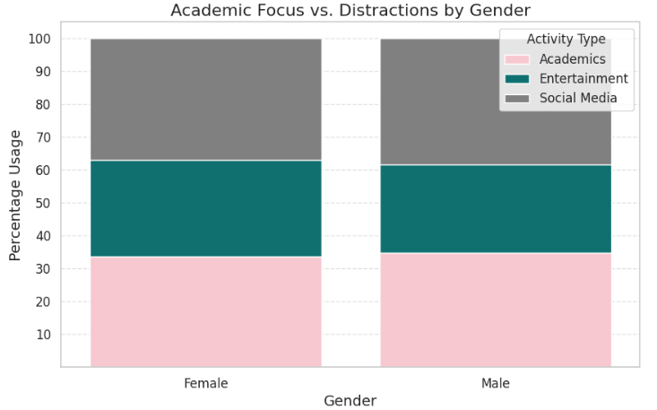

How does internet usage affect academic performance and productivity?
Imagine this: You wake up, grab your phone, and before you even get out of bed, you're scrolling through social media, watching videos, or reading news updates. For students, the internet is more than just entertainment—it's a gateway to information, learning, and, sometimes, distraction.In today's digital world, internet usage among students is widespread and diverse. Some leverage it for academic research, online courses, and collaborative learning. Others, however, find themselves engrossed in endless streams of social media, gaming, or entertainment. The key question is: How does internet usage impact student productivity and academic performance? I've collected a datset of 50 students, this study explores the relationship between internet habits and academic success. Through data analysis and visualization, we uncover trends, and insights that reveal whether the internet is truly an enabler of learning—or a silent disruptor of student focus. By the end of this exploration, we aim to answer a crucial question: Is the internet a tool for academic excellence, or is it an unavoidable source of distraction? The story unfolds through data, leading us to a clearer understanding of this modern paradox.
Looking at the data, we see a diverse mix of internet usage. Some students rely on it for academic research, while others use it for entertainment, socializing, or casual browsing. A pie chart breaks down these categories, revealing that while a large chunk of students use the internet for studies, many spend significant time on non-academic activities. This raises an important question: How does this affect academic performance?
We often hear that "hard work pays off," but is that always true? A scatterplot mapping daily study hours against CGPA shows a fascinating trend—students who dedicate moderate but consistent study hours tend to have better grades. However, there are diminishing returns; simply cramming for long hours doesn’t necessarily guarantee success. So, what about the time spent online?
A common belief is that excessive internet use negatively impacts academic performance. But does the data back this up? A bar chart comparing internet usage hours and CGPA reveals that students who spend extreme amounts of time online—either too much or too little—tend to perform worse academically. A balanced approach appears to be key.
But there's more to the story than just grade. Students were also asked to self-report their productivity levels based on their primary internet activities. The results, shown in a boxplot, indicate that those who primarily use the internet for research and coursework report higher productivity than those who use it for social media or entertainment.
One of the most intriguing insights comes from comparing male vs. female CGPA performance. A bar plot reveals that while both genders show a wide range of CGPAs, female students tend to have slightly more consistent performance.
Female students tend to dedicate a higher percentage of their internet time to academics compared to male students. Male students generally spend more time on entertainment and social media than females. The time spent on social media is relatively similar between genders, but males engage more in entertainment activities.
The internet is a double-edged sword. It has the potential to boost productivity and enhance learning, but it can also be a significant distraction. The data underscores the importance of finding a balance between academic and leisure internet use. By doing so, students can harness the power of the internet to achieve their academic goals while still enjoying the benefits of online connectivity. In the end, the internet is what you make of it. Use it wisely, and it can be your greatest ally in the pursuit of knowledge and success.